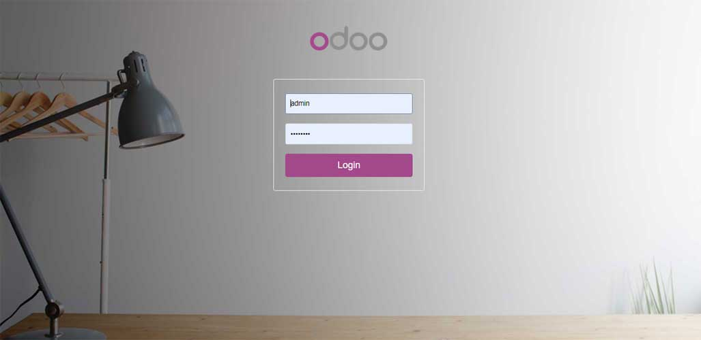

<section class="oe_container">
    <div class="oe_row oe_spaced">
        <h3 class="oe_slogan"style="color:#337ab7;"><strong>Custom Odoo Login Page</strong></h3>
        <p class="oe_mt32" style="color:#048065;">
            Module will modified your odoo login page. 
        </p>
        <p style="color:CRIMSON;"><b>
            Main Features:
        </p>
        <p style="color:#048065;">
            - Custom Odoo Login Page<br>
            - Remove Button Manage database<br>
            - Remove Footer Page<br>
     
        </p>
		<div class="oe_screenshot" style="text-align: center;">
           
		   
       </div>
    </div>
</section>


